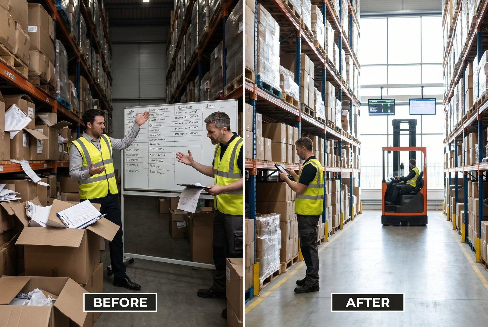

Ikke alle har brug for WMS. Det er den ærlige besked.
Hvis du sender 30 ordrer om dagen med 80 produkter og to medarbejdere der kender lageret udenad, er Excel fint nok.
Men der er et tidspunkt, hvor dit nuværende setup begynder at koste mere end det, du tror. Denne artikel giver dig de præcise tærskler.
Hvornår er Excel og manuel styring fint nok?
Dit nuværende setup er sandsynligvis tilstrækkeligt, hvis:
- Under 50 ordrer om dagen i gennemsnit
- Under 200 aktive SKU'er
- 1-2 medarbejdere på lageret
- Lav returrate (under 5%)
- Ingen sezonal toppe der er mere end dobbelt normal volumen
- Samme 1-2 medarbejdere der har været der længe og kender lageret
I det scenarie giver kompleksiteten ved WMS-opsætning ikke det store afkast. Du kan håndtere tingene med en god Excel-skabelon, gode vaner og klar kommunikation.
👉 Er du i tvivl om du er der? Få gratis afklaring fra SmartPack
Hvornår knækker det?
Der er tre udløsere der hver for sig er nok til at dit nuværende setup begynder at koste dig:
Over 100 ordrer om dagen
Det er det punkt, hvor manuel koordinering begynder at svigte. For mange ordrer til at holde styr på manuelt. Plukkerne krydser hinandens ruter. Fejlraten stiger. Du er nødt til at bruge tid på at koordinere frem for at producere.
Over 500 aktive SKU'er
Ingen husker 500 produktlokationer. Det er ikke et spørgsmål om vaner eller erfaring. Det er et spørgsmål om kognitiv kapacitet. Over 500 SKU'er er søgetid og placeringsfejl strukturelle problemer, ikke undtagelser.
Plukkefejlrate over 1%
1% fejlrate ved 200 ordrer om dagen er 2 fejl dagligt. Det er 40 om måneden. Hver fejl koster i returhåndtering, nyt fragt, kundeservice og potentielt mistet kunde. Ved en gennemsnitlig fejlomkostning på 250 kr. per fejl er det 10.000 kr. om måneden i direkte tab. Dertil kommer LTV-tab på utilfredse kunder.
Decision matrix: 5 spørgsmål
Svar ærligt på disse fem spørgsmål. Jo flere gange du svarer “ja”, jo mere presserende er skiftet.
- Har du haft mindst 3 plukkefejl den seneste måned?
Ja = WMS vil reducere dette markant fra første uge. - Bruger dine medarbejdere mere end 10 minutter om dagen på at lede efter varer?
Ja = du betaler for søgetid der kan elimineres. - Har du svært ved at scåle i peak-perioder uden at ansætte ekstra?
Ja = systemet kan ikke absorbere volumen-variationer. - Har du mere end 200 SKU'er og ingen ny medarbej der kan arbejde selvstændigt inden for 2 timer?
Ja = oplæringstiden er for høj og afhængighed for stor. - Er din plukkefejlrate over 0,5%?
Ja = det begynder at koste dig mærkbart i returhåndtering.
0-1 ja: Bliv ved dit nuværende setup. Optimer processer og dokumenter dem.
2-3 ja: Du er i grænsezonen. Beregn hvad fejl og spildt tid koster dig præcist. WMS er sandsynligvis rentabelt inden for 12 måneder.
4-5 ja: Du venter for længe allerede. Hvert kvartal du venter koster dig mere end WMS koster i et år.
Faldgruben: at vente for længe
Det er den typiske fejl. Man ser WMS som en investering man foretager når man er stor nok. Men det er som regel omvendt: WMS er det der gør dig stor nok til at absorbere væksten.
En virksomhed der venter til de har 300 ordrer om dagen og 800 SKU'er, har i mellemtiden brugt hundredtusinder på fejl, spildt tid og overbesætning. Skiftet er også sværere når man er stor: mere data at migrere, mere at lære op, mere potentielt kaos i overgangsperioden.
At skifte for tidligt koster noget. At skifte for sent koster mere.
SmartPack: gratis afklaring
Vi tager ikke alle kunder. Hvis du har 20 ordrer om dagen og alt kører fint, er SmartPack ikke det rigtige for dig nu. Det siger vi rent ud.
Men hvis du er i tvivl, giver vi en gratis gennemgang af dit nuværende setup og siger dig, om og når det giver mening at skifte. Ingen salg, ingen pres. Bare en konkret vurdering.